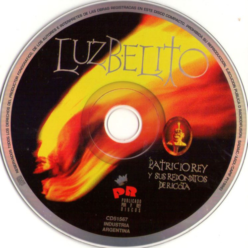
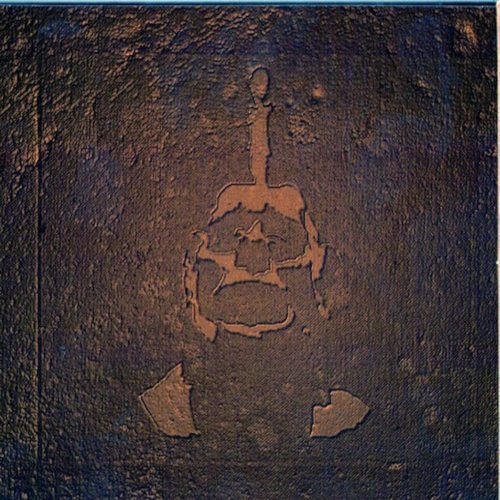
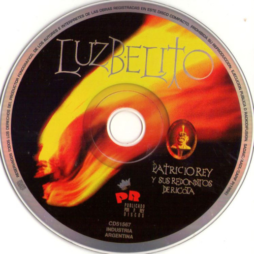
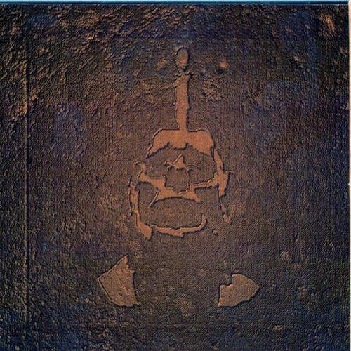

Luzbelito
Luzbelito es el octavo álbum de estudio del grupo musical de Argentina Patricio Rey y sus Redonditos de Ricota, publicado en julio de 1996, y a su vez una de sus más polémicas obras. Es un disco conceptual que, a través de la idea de un ficticio hijo del demonio llamado Luzbelito, juega con las ambigüedades de las creencias y comportamientos humanos desde distintos puntos de vista. La edición argentina de la revista Rolling Stone ubicó al disco en el puesto 88 entre los 100 mejores discos del rock nacional.[1] También, Mariposa Pontiac - Rock del país fue considerado por Rock.com.ar como la tercera canción más destacada del rock nacional.
El álbum llevó más tiempo de producción que los anteriores, además de usar más estudios de grabación (se grabó en Be Bop, San Pablo, New River, Fort Lauderdale y El Pie, Buenos Aires).
EDurante la gira de presentación del álbum el grupo fue víctima de un acto de censura al ser obligados a suspender el concierto programado en la ciudad de Olavarría en agosto de 1997, cuando el entonces intendente de la misma, Helios Eseverri, resolvió mediante un decreto impedir la presentación del grupo. La excusa oficial fue el temor a que se desataran hechos de violencia por parte de su audiencia, como era habitual. El recital fue finalmente realizado más tarde en la vecina localidad de Tandil el 4 de octubre de ese mismo año.
| Luzbelito | ||
|---|---|---|
| Albúm de estudio | ||
| Publicación | 30 de julio de 1996 | |
| Grabación | 1994-1995 | |
| Estudio | Estudios Tubal (Bs.As) | |
| Género(s) | Post-Punk, Rock and Roll, Hard Rock | |
| Formato | CD, Vinilo, Cassette, Digital | |
| Duración | 56:27 | |
| Discográfica | Del Cielito Records | |
| Productor(es) | Patricio Rey y sus Redonditos de Ricota | |
| Ventas | 70.000 | |
Listado de canciones
- Luzbelito y las sirenas (4:06)
- Cruz diablo! (4:13)
- Ella baila con todos (5:00)
- Fanfarria del cabrío (5:09)
- Nuotatori professionisti (4:42)
- Blues de la libertad (5:01)
- La dicha no es una cosa alegre (5:38)
- Me matan, Limón! (3:35)
- Rock yugular (7:05)
- Mariposa Pontiac - Rock del país (4:43)
- Juguetes perdidos (7:10)
 



Galería de imágenes